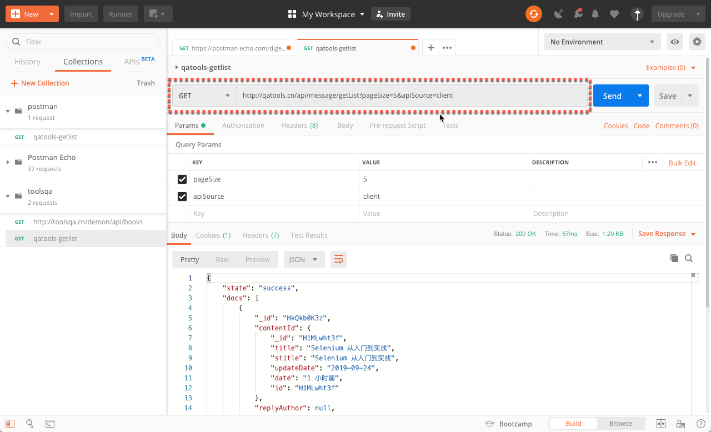

API 请求响应处理
发送请求
使用 “GET” 方法发送 HTTP 请求。点击 【Send】按钮后，请求会发送到 URL 地址，接收到请求后，服务器端会根据请求参数返回响应的结果。

响应结果显示
一般情况下，Postman 会根据服务器返回的数据格式按照 “Pretty” 的方式显示结果，便于用户阅读。用户也可以根据需要把数据显示形式修改为 “原始数据（Raw）”、“预览（Preview）”的方式。
Pretty 显示方式
Pretty 显示方式支持的数据格式包括 JSON、XML、HTML、Text等。
Raw 显示方式
显示响应结果的原始数据方式。适用于服务器返回的各种数据格式。
Preview 显示方式
预览方式显示响应数据。如果服务器返回的数据是 HTML 格式的，将以浏览器的模式预览成网页页面。
Cookies
Cookies 包含了服务器的一些信息。当我们第一次访问一个网站的时候，会从服务器上下载一个 cookie 到本地。cookie 中包含的信息当再一次访问该网站的时候会被网站服务使用到，网站会基于 cookie 返回特定的信息给客户端。Postman 可以查看服务器返回的 cookie。
响应头 （Headers）
HTTP 请求和响应头（Headers）是传送给客户端或者服务器的一些额外信息。它可以在 Postman 的 【Headers】 标签栏查看到。
Once you click on header you can see different information such as below. Although, every entry in the Headers tab is a header item we will just take a look at the most important ones.
鼠标点击 Postman 的 【Headers】 标签，可以查看以下头部参数：
Content-Type ：返回信息的内容类型，例如 text/html、application/json、application/xml等
Content-Length : 返回信息的长度，字节数据
Date : 返回信息的日期、时间以及时区
Server : 返回信息的应用服务器类型
Cookie expire time : Cookies 的到期时间
复制响应数据
点击标签栏上的 【复制】 按钮可以复制返回的报文内容。
查询响应数据
点击标签栏上的 【查询】按钮，可以查询报文内容